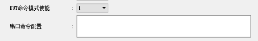

3.9. PC透传命令、自定义命令使用
3.9.1. PC透传命令方法
3.9.1.1. 功能介绍
为方便测试盒接入MES系统。
支持读取串口连接耳机的蓝牙地址
支持透传自定义命令
3.9.1.2. 操作方式
测试盒上位机设置
【1】PC端连接测试盒，长按测试盒位于最右按键，进入PC配置模式，测试盒显示“LOADING”；

【2】打开上位机软件，在有线串口模式配置“DUT命令模式使能”为1；

测试盒硬件环境
【1】拨码配置：该模式不关心拨码开关的位置；
【2】测试盒串口端接治具，参考《测试盒串口连接治具介绍》
操作步骤
【1】测试盒长按最右按键进入PC模式
【2】PC使用命令行打开上位机，具体参数可由bluetooth_test_box.exe –console -h获取。
【3】测试完成，将耳机放入正常充电仓，恢复正常模式
3.9.2. 串口模式自定义串口命令使用说明
DUT命令模式下自定义串口命令配置

在DUT命令模式使能下，若串口命令配置无内容，则测试盒发送原有CMD_BOX_ENTER_DUT(0x04)命令，sdk收到该命令的默认响应为进入待连接的DUT测试状态。
若串口命令配置为自定义内容（最多输入31字节16进制数值）,测试盒发送以CMD_BOX_CUSTOM_CODE(0xF0)的开始的命令；即当输入00时，测试盒会发送F0 00 命令，sdk默认对该命令的处理为进入快速自测模式。用户可以修改命令配置的内容，同时在sdk添加对该命令的响应操作来实现特定功能。
Note
DUT命令模式，与串口模式下的升级/配对/测试均互斥，不能同时使用。
3.9.3. 自定义命令发送模式使用说明
V1.2.6.f添加自定义命令发送模式配置项（
该配置需sdk支持）
该模式支持在BLE从机测试模式（拨码1关，拨码6开）下，指定间隔发送自定义命令序列给待测设备，以实现控制待测设备切换不同工作状态实现自动测试。


2.使用说明
当“自定义命令发送模式”配置为1时，“自定义命令配置”配置区可以配置自定义命令内容。
当“自定义命令发送模式”配置为0时，“自定义命令配置”配置区不可编辑。
“自定义命令配置”区中间隔时间支持1~255，单位100ms，即配置为10，为1秒间隔发送一条命令；
“自定义命令配置”区中自动循环发送打“√”,则将所有使能命令自动循环发送，不打“√”则只发一遍。
“自定义命令配置”区中命令数据内容支持十六进制形式或字符形式输入，通过勾选每条命令后的“HEX”实现，命令数据前的使能框需要打“√”才会在发送时使用，不打“√”则该命令仅存储在测试盒，不会发送；
当配置完如上配置信息后，需点击“保存设置到测试盒”，保存成功后复位测试盒生效本次配置。
当与待测设备建立ble连接后，按下测试盒对应通道的控制按键（CH1为左按键，CH2为中按键）即可切换进入或退出“自定义命令发送模式”，当进入自定义命令发送模式，测试盒会显示“TX CMD MODE”内容，退出则显示原来频偏或地址信息；